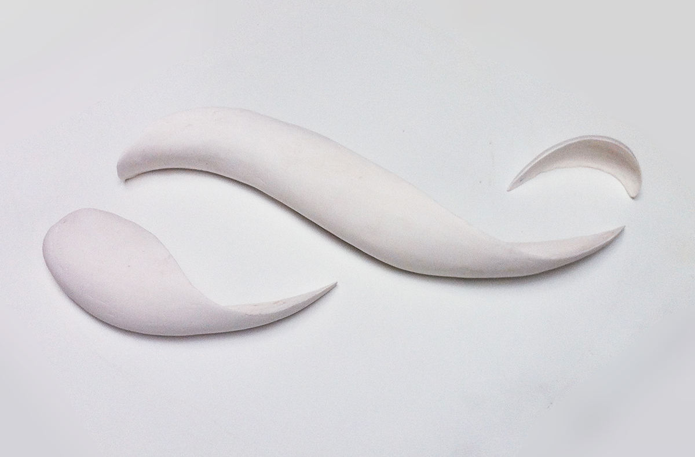
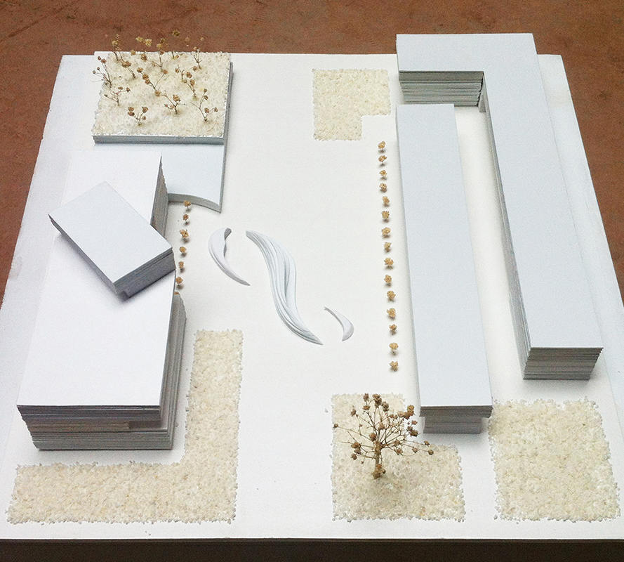

Titre : LOOP
Type d’œuvre : Sculpture du paysage
Taille: 38*15*12 (cm)
Matériau: Platre, PVC
Résumé: La sculpture du paysage publique conçu pour la rue pietonne du Musee de LUO Zhongli de l’Académie des Beaux-arts du Sichuan. Elle ressemble à un anneau Moobius qui s’expose la moitié sur le sol. Sous forme d’une vague de roulent, les enfants peuvent aussi grimper dessus dessous comme un toboggan.


